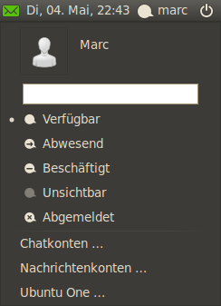
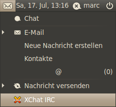

MeMenu
Archivierte Anleitung
Dieser Artikel wurde archiviert, da er - oder Teile daraus - nur noch unter einer älteren Ubuntu-Version nutzbar ist. Diese Anleitung wird vom Wiki-Team weder auf Richtigkeit überprüft noch anderweitig gepflegt. Zusätzlich wurde der Artikel für weitere Änderungen gesperrt.
Zum Verständnis dieses Artikels sind folgende Seiten hilfreich:
MeMenu ist eine schlanke und komfortable zentrale Schnittstelle, welche unter einer Oberfläche die Funktionen von dem Instant Messenger Empathy, der Microblogging-Software Gwibber, dem E-Mail-Programm Evolution, dem Online-Speicherplatz Ubuntu One und optional XChat vereint. Da nicht jeder Benutzer alle Anwendungen nutzt, ist das Layout und die Funktionalität von MeMenu auf die entsprechenden Erfordernisse des jeweiligen Nutzers individuell zugeschnitten.
Installation¶
|  |
| MeMenu in Aktion |
MeMenu kann über das folgende Paket nachträglich installiert werden [1]:
indicator-me
xchat-indicator (universe, XChat über MeMenu steuern)
 mit apturl
mit apturl
Paketliste zum Kopieren:
sudo apt-get install indicator-me xchat-indicator
sudo aptitude install indicator-me xchat-indicator
und zum GNOME Panel hinzufügen.
Konfiguration¶
Die Grundkonfiguration der einzelnen Programmteile erreicht man über einen Linksklick  auf die jeweiligen Symbole (Briefumschlag) und (Statusmeldung / Benutzername) der zweigeteilten Anwendung, die man rechts oben in der Taskleiste findet. Hinter , gefolgt vom Benutzernamen, findet man die Menüpunkte "Chatkonten ...", "Nachrichtenkonten ..." und "Ubuntu One". Hier werden die für die Programme typischen Komponenten zur Einrichtung gestartet. Über "E-Mail einrichten ...", unter , wird der Einrichtungsassistent von Evolution aufgerufen.
auf die jeweiligen Symbole (Briefumschlag) und (Statusmeldung / Benutzername) der zweigeteilten Anwendung, die man rechts oben in der Taskleiste findet. Hinter , gefolgt vom Benutzernamen, findet man die Menüpunkte "Chatkonten ...", "Nachrichtenkonten ..." und "Ubuntu One". Hier werden die für die Programme typischen Komponenten zur Einrichtung gestartet. Über "E-Mail einrichten ...", unter , wird der Einrichtungsassistent von Evolution aufgerufen.
Detaillierte Beschreibungen dazu findet man in den jeweiligen Wiki-Artikeln:
Bedienung¶
MeMenu wird über die beiden Symbole bedient. Es nutzt die bei der Installation hinterlegten Daten. Diese kann man ändern, indem man auf den Anmeldenamen unter dem Benutzernamen klickt und diese entsprechend verändert.
Hinweis:
Möchte man verhindern, dass der Realname (z.B. im IRC) angezeigt wird, sollte man die hinterlegten Daten auf jeden Fall ändern.
|  |
| XChat in Memenu eingebunden |
Bei eingehenden E-Mail- bzw. Chat-Nachrichten färbt sich das Symbol in der Systemleiste grün. Wählt man das Symbol an, kann man die eingegangene(n) Nachricht(en) auswählen. Möchte man E-Mails versenden oder die in Evolution hinterlegten Kontakte bearbeiten, so wählt man die entsprechenden Menüpunkte "Kontakte", "E-Mail" oder "Neue Nachricht verfassen" an.
Den Status für den Chat ändert man, indem auf den Login-Namen einen Linksklick ausführt und aus der Liste den gewünschten Status wählt. Dieser erscheint zur Kontrolle in der Taskleiste neben dem Login-Namen. Der Status wird für alle hinterlegten Konten übernommen. Hat man einen Microblog hinzugefügt, kann man direkt über die Textzeile eine Nachricht auf die Webseite stellen: kann man max. 144 Zeichen eingeben und mit
⏎ abschicken.
Hinweis:
Nicht jeder Status existiert für jeden Dienst.


- Erstellt mit Inyoka
-
 2004 – 2017 ubuntuusers.de • Einige Rechte vorbehalten
2004 – 2017 ubuntuusers.de • Einige Rechte vorbehalten
Lizenz • Kontakt • Datenschutz • Impressum • Serverstatus -
Serverhousing gespendet von